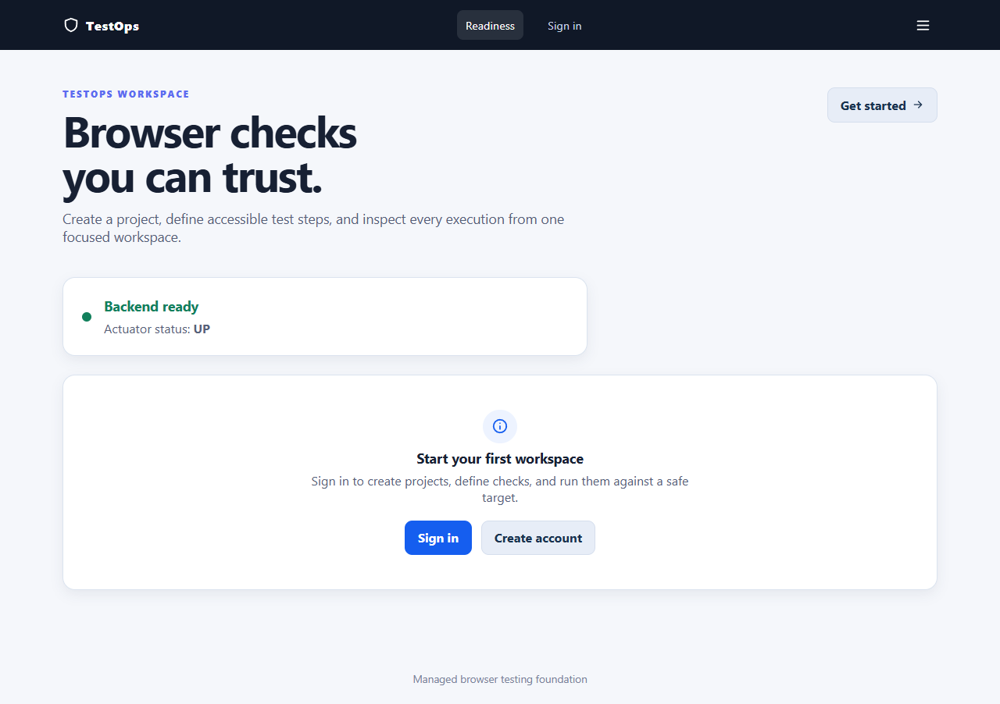
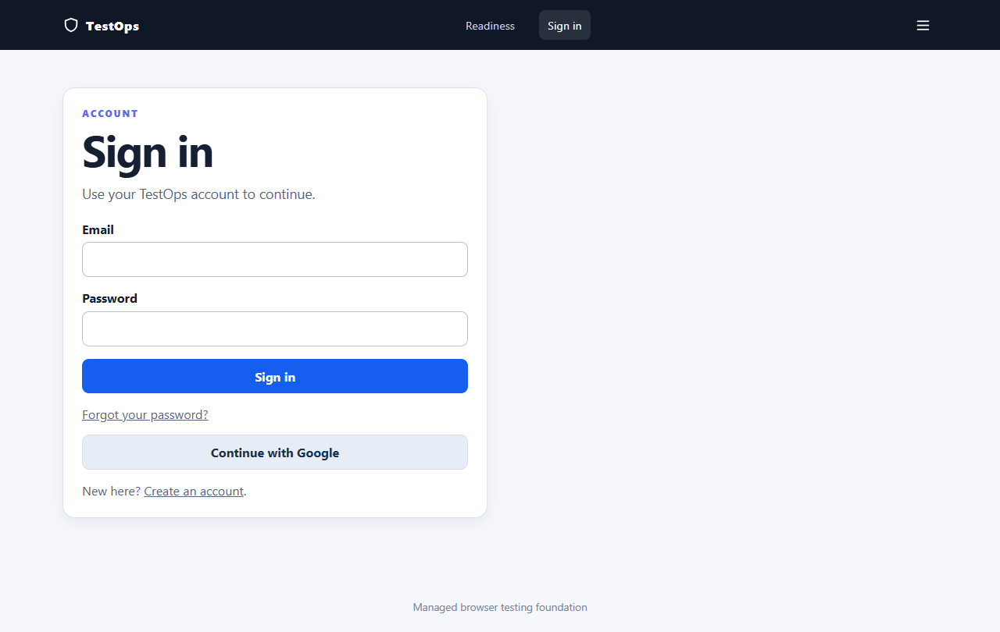
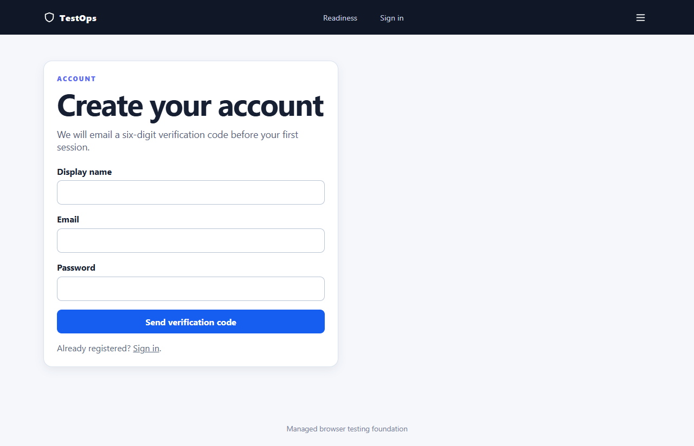

Before you begin
TestOps is a manager for browser checks. It does not change the target website. You register a target origin, describe steps, and let an isolated Chromium worker execute an immutable snapshot.
Local services
- TestOps UI:
http://localhost:3000 - TestOps API: proxied by the UI; direct backend is normally
http://localhost:8080 - Optional ecommerce target:
http://localhost:3001when its controlled stack is running
Safe habits
- Use a QA mailbox and QA-owned records.
- Never paste tokens, passwords, OTPs, or secret variables into screenshots.
- Use exact allowlisted origins; do not test arbitrary LAN or private addresses.
1. Check platform readiness
- Open
http://localhost:3000. - Wait for the green Backend ready card and an UP actuator status.
- Select Sign in or Create account.



2. Register, verify, and sign in
- Enter a display name, a QA email, and a password that meets the visible requirements.
- Select Send verification code. The server creates an OTP challenge and sends one message through the configured mail provider.
- Open the verification page, enter the six-digit code, and submit.
- If the code expires, select resend. The server controls the cooldown; do not repeatedly refresh to bypass it.
- Sign in. A verified user reaches the workspace; an unverified user remains signed in but sees a persistent verification banner and restricted actions.
Forgotten password
- On Sign in, choose Forgot your password?.
- Request a reset code. The response is intentionally generic so it does not reveal whether an address exists.
- Enter email, OTP, new password, and confirmation.
- After success, return to Sign in. Invalid, expired, reused, and rate-limited codes are shown beside the relevant field.
Backend ownership: auth/api/AuthController.java and auth/service. The refresh cookie is HttpOnly and is never copied into a form or report.
3. Use the account menu and security center
- Open the top-right account control. It exposes your display name and email plus permitted destinations.
- Choose Account security to change a password, add a password to a Google-only account, or manage login methods.
- Changing a password requires the current password, a new password, and confirmation. On success all refresh sessions are revoked, so the browser returns to Sign in.
- Open Active sessions to review issue time, expiry, user agent, and IP. Revoke one session or revoke all; revoke-all signs out the current browser.
- Google linking is shown only when configured. Unlinking requires confirmation and a current password when it is the only remaining login method.
/account#security, /account#login-methods, and /account#sessions.4. Create a project and register a target
- Open Projects and choose New project.
- Enter a unique name, description, and exact target origin such as
http://localhost:3001. - Save. The project starts with target health
NOT_CHECKED. - Open the project overview and select Check connection. A check records sanitized status, response status, and check time; it does not store page content.
- For a local target, enable local development in backend configuration and allowlist the exact origin. The worker maps browser-visible localhost to
host.docker.internal. - Use Open target to confirm the page independently. If the check is BLOCKED, fix policy configuration; if UNREACHABLE, start the target or inspect Docker networking.
Project target changes reset health. Archived projects are readable but do not accept definition or execution writes.
5. Create suites and cases
- Open the project and choose Suites → New suite.
- Give the suite a unique active name. Use the suite description to document purpose and target assumptions.
- Choose New case. The builder has Details, Steps, and Review stages.
- Select a template: Homepage smoke, Search journey, or Blank case. Templates are starting points; review every locator.
- On Details, set name, description, status, priority, tags, retry count, and browser context.
- On Steps, add actions. Use semantic locators, explicit values, supported ARIA roles, and a timeout appropriate for the target.
- Use duplicate, reorder, and remove controls to refine the sequence. A viewer sees static summaries rather than editable controls.
- On Review, save a DRAFT while work is incomplete, or save as READY only after validation passes.
| Case status | Allowed contents | Can run? |
|---|---|---|
| DRAFT | Zero or partial steps are allowed; present values must be structurally valid. | No |
| READY | At least one step, first action NAVIGATE, complete action-specific fields, supported roles, resolvable variables. | Yes |
6. Variables and project members
Variables
- Open Variables and create a plain or secret value.
- Use the variable name in an input, expected value, locator, or navigation URL with the supported interpolation syntax.
- Secret values are masked in every API/UI response and decrypted only inside the worker.
- Before deleting a variable, resolve reference conflicts reported by the server.
Members
- Open Members and invite an existing user.
- Select the least-privileged project role needed: manager, test manager, tester, or viewer.
- Role changes are version-protected. A final manager cannot be removed or demoted if it would leave the project unmanaged.
- Non-members receive non-disclosing responses for nested project resources.
Backend ownership: ProjectVariableController, DefinitionController, and project membership services.
7. Trash, archive, and restore
- Open a suite or case and select Move to trash. Confirm in the accessible dialog.
- The definition becomes read-only and is excluded from active lists. Existing execution history remains readable.
- Open Trash to review archived suites and cases with actor/time metadata.
- Select Restore. A restored suite preserves child states; an individually restored case returns to DRAFT.
- If an active definition now uses the same name, provide a new name and retry. The server returns a structured conflict rather than silently overwriting.
8. Run a case or suite
- Open a READY case and choose Save & run, or queue the suite from its detail page.
- The API returns
202 Acceptedwith an execution ID and a Location header. The UI navigates directly to the run. - Do not edit the case expecting the queued run to change. The worker executes the immutable snapshot captured at queue time.
- Watch the status move through queued, running, and terminal states. Polling stops once the run is complete.
- Use cancel only as the requester or an authorized project manager. Retry queues a new execution and preserves the original history.
| Result | Read it as | Next action |
|---|---|---|
| PASSED | All steps met their expected outcomes. | Review evidence and keep the case READY. |
| FAILED | Test assertion or locator did not meet the case definition. | Open the failing step and correct the definition or target. |
| ERROR | Infrastructure, target, browser, or invalid-definition failure. | Follow the recovery guidance before changing the assertion. |
| CANCELLED | Run was intentionally stopped. | Retry only after confirming the target is safe. |
9. Read step results and evidence
- Open the run detail and start with the failure category banner.
- Review the ordered case results. Each step shows status, duration, failure position, and sanitized message.
- Screenshot steps show an inline preview when evidence policy permits. Use the download action for a retained trace.
- If a case used a genuine secret, evidence suppression is explained. Values must never appear in the message, filename, screenshot, or trace.
- Use the correlation ID when contacting an operator. It links the UI error to server logs without exposing credentials.
10. Dashboard and administration
Dashboard
- Open Dashboard and choose a 7, 30, or 90-day UTC window.
- Filter by project, suite, or browser when permitted.
- Use failure cards to jump to the correct execution. Infrastructure categories cover the full selected window.
Administration
- Administrators open Administration from the account menu.
- Search and paginate users; update role or account status with pending protection.
- The server prevents changes that would leave zero active administrators.
- Locked or disabled users are re-tested after a status change.
11. Test the ecommerce target safely
The ecommerce site is an external system under test, not a TestOps data store. Start its controlled Compose stack, register http://localhost:3001 exactly, enable the local bridge, and run a smoke case that navigates to /, asserts the catalog heading, and takes a screenshot.
- Confirm the ecommerce frontend is reachable from the host browser.
- Confirm the TestOps worker can reach
host.docker.internal:3001. - Run target check before queueing a case.
- Use QA credentials and deterministic local fixtures only.
- Keep payments, concurrency, Mailpit interception, and two-user messaging in native ecommerce tests when the workflow needs stronger orchestration.
See the workflow guide for the Docker/browser networking model.
Common failures and recovery
| Symptom | Likely cause | Recovery |
|---|---|---|
| Generic “unexpected error” on a form | Old container or an unclassified API problem. | Rebuild the stack, capture the correlation ID, and verify the response status. |
| Target health BLOCKED | Local mode disabled, origin not exact, or private address. | Set the explicit local-dev flag and exact allowlist; do not substitute 127.0.0.1. |
| No READY case available | Case is still DRAFT or first step is not NAVIGATE. | Return to Review, resolve field errors, and save as READY. |
| Locator failure | Text changed, locator is ambiguous, or page did not load. | Open target, prefer role/label/test-id locators, and rerun target check. |
| Screenshot or trace missing | Secret-bearing step, retention policy, or failed worker upload. | Read the suppression reason and inspect worker/artifact authorization. |
| Account link appears inert | Lazy route chunk or stale deployed bundle. | Reload once; if it repeats, use the branded recovery page and rebuild matching revisions. |